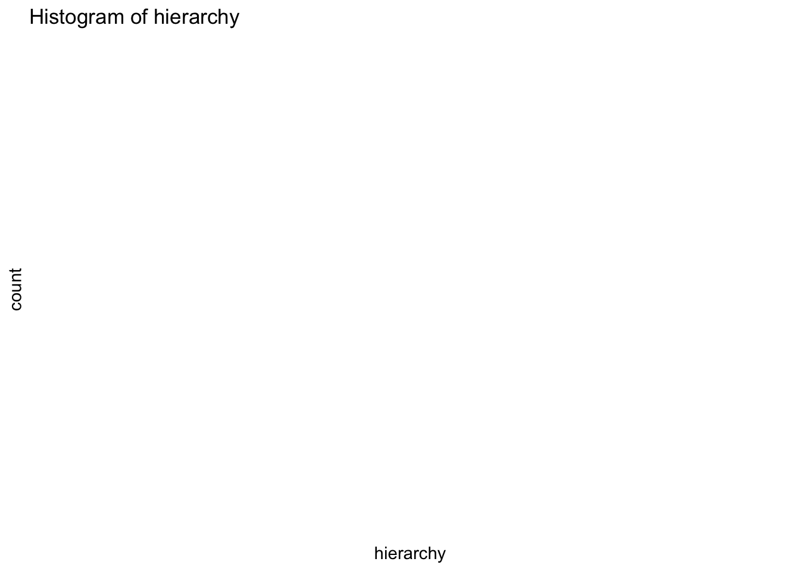
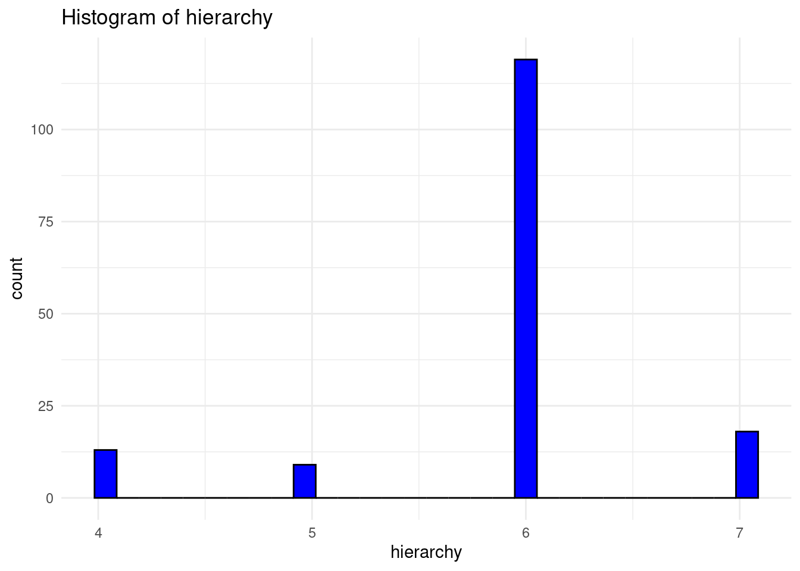

<!DOCTYPE html>
<html xmlns="http://www.w3.org/1999/xhtml" lang="en" xml:lang="en"><head>

<meta charset="utf-8">
<meta name="generator" content="quarto-1.3.450">

<meta name="viewport" content="width=device-width, initial-scale=1.0, user-scalable=yes">


<title>EUSILC</title>
<style>
code{white-space: pre-wrap;}
span.smallcaps{font-variant: small-caps;}
div.columns{display: flex; gap: min(4vw, 1.5em);}
div.column{flex: auto; overflow-x: auto;}
div.hanging-indent{margin-left: 1.5em; text-indent: -1.5em;}
ul.task-list{list-style: none;}
ul.task-list li input[type="checkbox"] {
  width: 0.8em;
  margin: 0 0.8em 0.2em -1em; /* quarto-specific, see https://github.com/quarto-dev/quarto-cli/issues/4556 */ 
  vertical-align: middle;
}
/* CSS for syntax highlighting */
pre > code.sourceCode { white-space: pre; position: relative; }
pre > code.sourceCode > span { display: inline-block; line-height: 1.25; }
pre > code.sourceCode > span:empty { height: 1.2em; }
.sourceCode { overflow: visible; }
code.sourceCode > span { color: inherit; text-decoration: inherit; }
div.sourceCode { margin: 1em 0; }
pre.sourceCode { margin: 0; }
@media screen {
div.sourceCode { overflow: auto; }
}
@media print {
pre > code.sourceCode { white-space: pre-wrap; }
pre > code.sourceCode > span { text-indent: -5em; padding-left: 5em; }
}
pre.numberSource code
  { counter-reset: source-line 0; }
pre.numberSource code > span
  { position: relative; left: -4em; counter-increment: source-line; }
pre.numberSource code > span > a:first-child::before
  { content: counter(source-line);
    position: relative; left: -1em; text-align: right; vertical-align: baseline;
    border: none; display: inline-block;
    -webkit-touch-callout: none; -webkit-user-select: none;
    -khtml-user-select: none; -moz-user-select: none;
    -ms-user-select: none; user-select: none;
    padding: 0 4px; width: 4em;
  }
pre.numberSource { margin-left: 3em;  padding-left: 4px; }
div.sourceCode
  {   }
@media screen {
pre > code.sourceCode > span > a:first-child::before { text-decoration: underline; }
}
</style>


<script src="EUSILC_files/libs/clipboard/clipboard.min.js"></script>
<script src="EUSILC_files/libs/quarto-html/quarto.js"></script>
<script src="EUSILC_files/libs/quarto-html/popper.min.js"></script>
<script src="EUSILC_files/libs/quarto-html/tippy.umd.min.js"></script>
<script src="EUSILC_files/libs/quarto-html/anchor.min.js"></script>
<link href="EUSILC_files/libs/quarto-html/tippy.css" rel="stylesheet">
<link href="EUSILC_files/libs/quarto-html/quarto-syntax-highlighting.css" rel="stylesheet" id="quarto-text-highlighting-styles">
<script src="EUSILC_files/libs/bootstrap/bootstrap.min.js"></script>
<link href="EUSILC_files/libs/bootstrap/bootstrap-icons.css" rel="stylesheet">
<link href="EUSILC_files/libs/bootstrap/bootstrap.min.css" rel="stylesheet" id="quarto-bootstrap" data-mode="light">


</head>

<body class="fullcontent">

<div id="quarto-content" class="page-columns page-rows-contents page-layout-article">

<main class="content" id="quarto-document-content">

<header id="title-block-header" class="quarto-title-block default">
<div class="quarto-title">
<h1 class="title">EUSILC</h1>
</div>


<div class="quarto-title-meta">

    
  
    
  </div>
  

</header>

<section id="definition" class="level2">
<h2 class="anchored" data-anchor-id="definition">Definition</h2>
<p>EU-SILC is an EU statistics on income and living conditions. According to eurostat, EU-SILC is to gather up-to-date and comparable data on income, poverty, social exclusion, and living conditions, both in a cross-sectional and longitudinal manner.</p>
</section>
<section id="data-types" class="level2">
<h2 class="anchored" data-anchor-id="data-types">Data types</h2>
<p>EU-SILC offers two kinds of data:</p>
<ol type="1">
<li>Cross-sectional data, which captures information at a specific time or over a defined period, includes variables related to income, poverty, social exclusion, and various living conditions.</li>
<li>Longitudinal data, which tracks changes at the individual level across time, observed regularly over four years.</li>
</ol>
<p>Data on social exclusion and housing conditions are primarily gathered at the household level. Meanwhile, information on labor, education, and health is collected from individuals aged 16 and older. Detailed component-level income variables are also predominantly obtained from individual respondents.</p>
</section>
<section id="data-availablity" class="level2">
<h2 class="anchored" data-anchor-id="data-availablity">Data availablity</h2>
<p>Data is available at eurostat database under the folder <a href="https://ec.europa.eu/eurostat/web/main/data/database?node_code=livcon">“Living conditions and welfare”</a>.</p>
<p>The folder contains four sub folders containing different datasets.</p>
<pre><code>1.  Consumption expenditure of private households (hbs)

    1.1 Mean consumption expenditure of private households (hbs_exp) 
    1.2 Structure of mean consumption expenditure (hbs_struc) 
    1.3 Household characteristics (hbs_carac)

2. Income and living conditions (ilc) 
    
    2.1 Persons at risk of poverty or social exclusion (EU 2030 target) (ilc_pe)

         2.1.1 Main indicator - Persons at risk of poverty or social exclusion (ilc_peps)
         2.1.2 Intersections between sub-populations of indicators included in the EU 2030 target on poverty and social exclusion (ilc_pees)
         
    2.2 Persons at risk of poverty or social exclusion and intersections between sub-populations (EU 2020 strategy) (ilc_p)
    
    2.3 Inequality (ilc_ie)
        2.3.1 Income inequality (ilc_iei)
        
    2.4 Income distribution and monetary poverty (ilc_ip)
        
        2.4.1 Monetary poverty (ilc_li)
        2.4.2 Monetary poverty for elderly people (ilc_pn)
        2.4.3 In-work poverty (ilc_iw)
        2.4.4 Distribution of income (ilc_di)
        
    2.5 Living conditions (ilc_lv)
    
        2.5.1 Private households (ilc_lvph) 
        2.5.2 Population structure (ilc_lvps) 
        2.5.3 Health and labour conditions (ilc_lvhl) 
        2.5.4 Housing conditions (ilc_lvho) 
        2.5.5 Childcare arrangements (ilc_ca) 
        2.5.6 Subjective poverty (ilc_sbjp) 
        
    2.6 Material deprivation (ilc_md)
    
        2.6.1 Material and social deprivation (ilc_mdsd)
        2.6.2 Material deprivation by dimension (ilc_mddd)
        2.6.3 Child specific material deprivation (ilc_chmd)
        2.6.4 Economic strain (ilc_mdes)
        2.6.5 Economic strain linked to dwelling (ilc_mded)
        2.6.6 Durables (ilc_mddu) 
        2.6.7 Housing deprivation (ilc_mdho) 
        2.6.8 Environment of the dwelling (ilc_mddw) 
        
    2.7 EU-SILC modules (ilc_ahm) 
    
        2.7.1 Living arrangements and conditions of children in separated and blended families (2021) (ilc_chsb) 
        2.7.2 Over-indebtedness, consumption and wealth as well as labour (2020) (ilc_odbt) 
        2.7.3 Intergenerational transmission of disadvantages (2019 and 2011) (ilc_igt) 
        2.7.4 Personal well-being indicators (2018 and 2013) (ilc_pwb)
        2.7.5 Health including children health (2017, 2021 and 2022) (ilc_hch)
        2.7.6 Access to services (2016) (ilc_ats)
        2.7.7 Social and cultural participation (2015) (ilc_scp)
        2.7.8 Material deprivation (2014) (ilc_mdm)
        2.7.9 Housing conditions (2012) (ilc_hcm)

3. Time use survey (tus)
4. Gender based violence against women (gbv)</code></pre>
<p>To retrieve data from eurostat the following code can be used</p>
<div class="cell">
<div class="sourceCode cell-code" id="cb2"><pre class="sourceCode r code-with-copy"><code class="sourceCode r"><span id="cb2-1"><a href="#cb2-1" aria-hidden="true" tabindex="-1"></a><span class="fu">library</span>(eurostat)</span>
<span id="cb2-2"><a href="#cb2-2" aria-hidden="true" tabindex="-1"></a>EU_SILC <span class="ot">&lt;-</span> <span class="fu">search_eurostat</span>(<span class="st">"EU-SILC survey"</span>)</span>
<span id="cb2-3"><a href="#cb2-3" aria-hidden="true" tabindex="-1"></a>knitr<span class="sc">::</span><span class="fu">kable</span>(<span class="fu">head</span>(EU_SILC))</span></code><button title="Copy to Clipboard" class="code-copy-button"><i class="bi"></i></button></pre></div>
<div class="cell-output-display">
<table class="table table-sm table-striped small">
<colgroup>
<col style="width: 53%">
<col style="width: 5%">
<col style="width: 3%">
<col style="width: 8%">
<col style="width: 12%">
<col style="width: 4%">
<col style="width: 3%">
<col style="width: 3%">
<col style="width: 4%">
</colgroup>
<thead>
<tr class="header">
<th style="text-align: left;">title</th>
<th style="text-align: left;">code</th>
<th style="text-align: left;">type</th>
<th style="text-align: left;">last.update.of.data</th>
<th style="text-align: left;">last.table.structure.change</th>
<th style="text-align: left;">data.start</th>
<th style="text-align: left;">data.end</th>
<th style="text-align: right;">values</th>
<th style="text-align: right;">hierarchy</th>
</tr>
</thead>
<tbody>
<tr class="odd">
<td style="text-align: left;">Distribution of population aged 18 and over by health status, age group, sex and degree of urbanisation - EU-SILC survey</td>
<td style="text-align: left;">ilc_lvhl01</td>
<td style="text-align: left;">dataset</td>
<td style="text-align: left;">15.12.2023</td>
<td style="text-align: left;">15.12.2023</td>
<td style="text-align: left;">2003</td>
<td style="text-align: left;">2022</td>
<td style="text-align: right;">122400</td>
<td style="text-align: right;">4</td>
</tr>
<tr class="even">
<td style="text-align: left;">Distribution of population by degree of urbanisation, dwelling type and income group - EU-SILC survey</td>
<td style="text-align: left;">ilc_lvho01</td>
<td style="text-align: left;">dataset</td>
<td style="text-align: left;">15.12.2023</td>
<td style="text-align: left;">15.12.2023</td>
<td style="text-align: left;">2003</td>
<td style="text-align: left;">2022</td>
<td style="text-align: right;">65376</td>
<td style="text-align: right;">4</td>
</tr>
<tr class="odd">
<td style="text-align: left;">Overcrowding rate by degree of urbanisation - total population - EU-SILC survey</td>
<td style="text-align: left;">ilc_lvho05d</td>
<td style="text-align: left;">dataset</td>
<td style="text-align: left;">15.12.2023</td>
<td style="text-align: left;">15.12.2023</td>
<td style="text-align: left;">2003</td>
<td style="text-align: left;">2022</td>
<td style="text-align: right;">2041</td>
<td style="text-align: right;">4</td>
</tr>
<tr class="even">
<td style="text-align: left;">Share of people living in under-occupied dwellings by degree of urbanisation - total population - EU-SILC survey</td>
<td style="text-align: left;">ilc_lvho50d</td>
<td style="text-align: left;">dataset</td>
<td style="text-align: left;">15.12.2023</td>
<td style="text-align: left;">15.12.2023</td>
<td style="text-align: left;">2003</td>
<td style="text-align: left;">2022</td>
<td style="text-align: right;">2038</td>
<td style="text-align: right;">4</td>
</tr>
<tr class="odd">
<td style="text-align: left;">Housing cost overburden rate by degree of urbanisation - EU-SILC survey</td>
<td style="text-align: left;">ilc_lvho07d</td>
<td style="text-align: left;">dataset</td>
<td style="text-align: left;">15.12.2023</td>
<td style="text-align: left;">15.12.2023</td>
<td style="text-align: left;">2003</td>
<td style="text-align: left;">2022</td>
<td style="text-align: right;">1999</td>
<td style="text-align: right;">4</td>
</tr>
<tr class="even">
<td style="text-align: left;">Median of the housing cost burden distribution by degree of urbanisation - EU-SILC survey</td>
<td style="text-align: left;">ilc_lvho08b</td>
<td style="text-align: left;">dataset</td>
<td style="text-align: left;">15.12.2023</td>
<td style="text-align: left;">15.12.2023</td>
<td style="text-align: left;">2003</td>
<td style="text-align: left;">2022</td>
<td style="text-align: right;">2014</td>
<td style="text-align: right;">4</td>
</tr>
</tbody>
</table>
</div>
</div>
<div class="cell">
<div class="sourceCode cell-code" id="cb3"><pre class="sourceCode r code-with-copy"><code class="sourceCode r"><span id="cb3-1"><a href="#cb3-1" aria-hidden="true" tabindex="-1"></a><span class="co"># Calculate the amount of missing data in each column</span></span>
<span id="cb3-2"><a href="#cb3-2" aria-hidden="true" tabindex="-1"></a><span class="fu">library</span>(dplyr)</span></code><button title="Copy to Clipboard" class="code-copy-button"><i class="bi"></i></button></pre></div>
<div class="cell-output cell-output-stderr">
<pre><code>
Attaching package: 'dplyr'</code></pre>
</div>
<div class="cell-output cell-output-stderr">
<pre><code>The following objects are masked from 'package:stats':

    filter, lag</code></pre>
</div>
<div class="cell-output cell-output-stderr">
<pre><code>The following objects are masked from 'package:base':

    intersect, setdiff, setequal, union</code></pre>
</div>
<div class="sourceCode cell-code" id="cb7"><pre class="sourceCode r code-with-copy"><code class="sourceCode r"><span id="cb7-1"><a href="#cb7-1" aria-hidden="true" tabindex="-1"></a>missing_data <span class="ot">&lt;-</span> <span class="fu">sapply</span>(EU_SILC, <span class="cf">function</span>(x) <span class="fu">sum</span>(<span class="fu">is.na</span>(x)))</span>
<span id="cb7-2"><a href="#cb7-2" aria-hidden="true" tabindex="-1"></a>missing_data</span></code><button title="Copy to Clipboard" class="code-copy-button"><i class="bi"></i></button></pre></div>
<div class="cell-output cell-output-stdout">
<pre><code>                      title                        code 
                          0                           0 
                       type         last.update.of.data 
                          0                           0 
last.table.structure.change                  data.start 
                          0                           0 
                   data.end                      values 
                          0                           0 
                  hierarchy 
                          0 </code></pre>
</div>
</div>
<div class="sourceCode cell-code" id="cb9"><pre class="sourceCode r code-with-copy"><code class="sourceCode r"><span id="cb9-1"><a href="#cb9-1" aria-hidden="true" tabindex="-1"></a><span class="fu">library</span>(ggplot2)</span>
<span id="cb9-2"><a href="#cb9-2" aria-hidden="true" tabindex="-1"></a></span>
<span id="cb9-3"><a href="#cb9-3" aria-hidden="true" tabindex="-1"></a><span class="co"># Function to create histograms for all numeric columns</span></span>
<span id="cb9-4"><a href="#cb9-4" aria-hidden="true" tabindex="-1"></a>plot_histograms <span class="ot">&lt;-</span> <span class="cf">function</span>(EU_SILC) {</span>
<span id="cb9-5"><a href="#cb9-5" aria-hidden="true" tabindex="-1"></a>  numeric_columns <span class="ot">&lt;-</span> <span class="fu">sapply</span>(EU_SILC, is.numeric)</span>
<span id="cb9-6"><a href="#cb9-6" aria-hidden="true" tabindex="-1"></a>  <span class="cf">for</span> (col_name <span class="cf">in</span> <span class="fu">names</span>(EU_SILC)[numeric_columns]) {</span>
<span id="cb9-7"><a href="#cb9-7" aria-hidden="true" tabindex="-1"></a>    p <span class="ot">&lt;-</span> <span class="fu">ggplot</span>(EU_SILC, <span class="fu">aes_string</span>(<span class="at">x =</span> col_name)) <span class="sc">+</span></span>
<span id="cb9-8"><a href="#cb9-8" aria-hidden="true" tabindex="-1"></a>      <span class="fu">geom_histogram</span>(<span class="at">bins =</span> <span class="dv">30</span>, <span class="at">fill =</span> <span class="st">"blue"</span>, <span class="at">color =</span> <span class="st">"black"</span>) <span class="sc">+</span></span>
<span id="cb9-9"><a href="#cb9-9" aria-hidden="true" tabindex="-1"></a>      <span class="fu">theme_minimal</span>() <span class="sc">+</span></span>
<span id="cb9-10"><a href="#cb9-10" aria-hidden="true" tabindex="-1"></a>      <span class="fu">labs</span>(<span class="at">title =</span> <span class="fu">paste</span>(<span class="st">"Histogram of"</span>, col_name))</span>
<span id="cb9-11"><a href="#cb9-11" aria-hidden="true" tabindex="-1"></a>    <span class="fu">print</span>(p)</span>
<span id="cb9-12"><a href="#cb9-12" aria-hidden="true" tabindex="-1"></a>  }</span>
<span id="cb9-13"><a href="#cb9-13" aria-hidden="true" tabindex="-1"></a>}</span>
<span id="cb9-14"><a href="#cb9-14" aria-hidden="true" tabindex="-1"></a></span>
<span id="cb9-15"><a href="#cb9-15" aria-hidden="true" tabindex="-1"></a><span class="co"># Call the function</span></span>
<span id="cb9-16"><a href="#cb9-16" aria-hidden="true" tabindex="-1"></a><span class="fu">plot_histograms</span>(EU_SILC)</span></code><button title="Copy to Clipboard" class="code-copy-button"><i class="bi"></i></button></pre></div>
<pre><code>Warning: `aes_string()` was deprecated in ggplot2 3.0.0.
ℹ Please use tidy evaluation idioms with `aes()`.
ℹ See also `vignette("ggplot2-in-packages")` for more information.</code></pre>
<p></p>
<<<<<<< HEAD
<div class="sourceCode cell-code" id="cb11"><pre class="sourceCode r code-with-copy"><code class="sourceCode r"><span id="cb11-1"><a href="#cb11-1" aria-hidden="true" tabindex="-1"></a><span class="co"># Get the id from the table</span></span>
<span id="cb11-2"><a href="#cb11-2" aria-hidden="true" tabindex="-1"></a>id <span class="ot">&lt;-</span> EU_SILC<span class="sc">$</span>code[<span class="dv">1</span>]</span>
<span id="cb11-3"><a href="#cb11-3" aria-hidden="true" tabindex="-1"></a></span>
<span id="cb11-4"><a href="#cb11-4" aria-hidden="true" tabindex="-1"></a><span class="co"># Check the id</span></span>
<span id="cb11-5"><a href="#cb11-5" aria-hidden="true" tabindex="-1"></a>dat <span class="ot">&lt;-</span> <span class="fu">get_eurostat</span>(id, <span class="at">time_format =</span> <span class="st">"num"</span>, <span class="at">stringsAsFactors =</span> <span class="cn">TRUE</span>)</span></code><button title="Copy to Clipboard" class="code-copy-button"><i class="bi"></i></button></pre></div>
<p>indexed 0B in  0s, 0B/s indexed 1.00TB in  0s, 106.37TB/s</p>
<pre><code>Table ilc_lvhl01 cached at /var/folders/2j/0z_4hj9x2536zbjhtj96swgw0000gn/T//RtmpnwRE5P/eurostat/a49fd31c836c6a6395a2db6d1fd01fc8.rds</code></pre>
<div class="sourceCode cell-code" id="cb13"><pre class="sourceCode r code-with-copy"><code class="sourceCode r"><span id="cb13-1"><a href="#cb13-1" aria-hidden="true" tabindex="-1"></a>knitr<span class="sc">::</span><span class="fu">kable</span>(<span class="fu">head</span>(dat))</span></code><button title="Copy to Clipboard" class="code-copy-button"><i class="bi"></i></button></pre></div>
=======
<div class="sourceCode cell-code" id="cb9"><pre class="sourceCode r code-with-copy"><code class="sourceCode r"><span id="cb9-1"><a href="#cb9-1" aria-hidden="true" tabindex="-1"></a><span class="co"># Get the id from the table</span></span>
<span id="cb9-2"><a href="#cb9-2" aria-hidden="true" tabindex="-1"></a>id <span class="ot">&lt;-</span> EU_SILC<span class="sc">$</span>code[<span class="dv">1</span>]</span>
<span id="cb9-3"><a href="#cb9-3" aria-hidden="true" tabindex="-1"></a></span>
<span id="cb9-4"><a href="#cb9-4" aria-hidden="true" tabindex="-1"></a><span class="co"># Check the id</span></span>
<span id="cb9-5"><a href="#cb9-5" aria-hidden="true" tabindex="-1"></a>dat <span class="ot">&lt;-</span> <span class="fu">get_eurostat</span>(id, <span class="at">time_format =</span> <span class="st">"num"</span>, <span class="at">stringsAsFactors =</span> <span class="cn">TRUE</span>)</span></code><button title="Copy to Clipboard" class="code-copy-button"><i class="bi"></i></button></pre></div>
<pre><code>Table ilc_lvhl01 cached at /tmp/RtmpIp4O9O/eurostat/a49fd31c836c6a6395a2db6d1fd01fc8.rds</code></pre>
<div class="sourceCode cell-code" id="cb11"><pre class="sourceCode r code-with-copy"><code class="sourceCode r"><span id="cb11-1"><a href="#cb11-1" aria-hidden="true" tabindex="-1"></a>knitr<span class="sc">::</span><span class="fu">kable</span>(<span class="fu">head</span>(dat))</span></code><button title="Copy to Clipboard" class="code-copy-button"><i class="bi"></i></button></pre></div>
>>>>>>> origin
<div class="cell-output-display">
<table class="table">
<thead>
<tr class="header">
<th style="text-align: left;">freq</th>
<th style="text-align: left;">deg_urb</th>
<th style="text-align: left;">levels</th>
<th style="text-align: left;">age</th>
<th style="text-align: left;">sex</th>
<th style="text-align: left;">unit</th>
<th style="text-align: left;">geo</th>
<th style="text-align: right;">TIME_PERIOD</th>
<th style="text-align: right;">values</th>
</tr>
</thead>
<tbody>
<tr class="odd">
<td style="text-align: left;">A</td>
<td style="text-align: left;">DEG1</td>
<td style="text-align: left;">BAD</td>
<td style="text-align: left;">Y18-64</td>
<td style="text-align: left;">F</td>
<td style="text-align: left;">PC</td>
<td style="text-align: left;">AL</td>
<td style="text-align: right;">2017</td>
<td style="text-align: right;">2.0</td>
</tr>
<tr class="even">
<td style="text-align: left;">A</td>
<td style="text-align: left;">DEG1</td>
<td style="text-align: left;">BAD</td>
<td style="text-align: left;">Y18-64</td>
<td style="text-align: left;">F</td>
<td style="text-align: left;">PC</td>
<td style="text-align: left;">AL</td>
<td style="text-align: right;">2018</td>
<td style="text-align: right;">2.2</td>
</tr>
<tr class="odd">
<td style="text-align: left;">A</td>
<td style="text-align: left;">DEG1</td>
<td style="text-align: left;">BAD</td>
<td style="text-align: left;">Y18-64</td>
<td style="text-align: left;">F</td>
<td style="text-align: left;">PC</td>
<td style="text-align: left;">AL</td>
<td style="text-align: right;">2019</td>
<td style="text-align: right;">2.9</td>
</tr>
<tr class="even">
<td style="text-align: left;">A</td>
<td style="text-align: left;">DEG1</td>
<td style="text-align: left;">BAD</td>
<td style="text-align: left;">Y18-64</td>
<td style="text-align: left;">F</td>
<td style="text-align: left;">PC</td>
<td style="text-align: left;">AL</td>
<td style="text-align: right;">2020</td>
<td style="text-align: right;">2.9</td>
</tr>
<tr class="odd">
<td style="text-align: left;">A</td>
<td style="text-align: left;">DEG1</td>
<td style="text-align: left;">BAD</td>
<td style="text-align: left;">Y18-64</td>
<td style="text-align: left;">F</td>
<td style="text-align: left;">PC</td>
<td style="text-align: left;">AL</td>
<td style="text-align: right;">2021</td>
<td style="text-align: right;">3.3</td>
</tr>
<tr class="even">
<td style="text-align: left;">A</td>
<td style="text-align: left;">DEG1</td>
<td style="text-align: left;">BAD</td>
<td style="text-align: left;">Y18-64</td>
<td style="text-align: left;">F</td>
<td style="text-align: left;">PC</td>
<td style="text-align: left;">AT</td>
<td style="text-align: right;">2003</td>
<td style="text-align: right;">2.3</td>
</tr>
</tbody>
</table>
</div>
<p>The <a href="https://ec.europa.eu/eurostat/documents/203647/771732/Datasets-availability-table.pdf">data availability table</a> shows the latest and planned releases of EU-SILC scientific use files.</p>
<p>The <a href="https://ec.europa.eu/eurostat/documents/203647/16993001/Methodological+guidelines+2022+operation+v7.pdf/ec6bc779-6462-34aa-a8bd-256f8af34d31?t=1703153300474">EU-SILC Guidelines</a> can be refered for further information.</p>
<p><a href="https://ec.europa.eu/eurostat/documents/203647/203704/EU-SILC+microdata+with+DOIs.pdf/04b57b6d-803b-fa8d-bf6b-fe21fe6d1cb2?t=1703162264564">List of EU-SILC microdata releases with digital object identifiers</a></p>
</section>
<section id="retroharmonize-implementation" class="level2">
<h2 class="anchored" data-anchor-id="retroharmonize-implementation">retroharmonize implementation</h2>
<div class="sourceCode cell-code" id="cb14"><pre class="sourceCode r code-with-copy"><code class="sourceCode r"><span id="cb14-1"><a href="#cb14-1" aria-hidden="true" tabindex="-1"></a><span class="fu">library</span>(retroharmonize)</span>
<span id="cb14-2"><a href="#cb14-2" aria-hidden="true" tabindex="-1"></a>(<span class="fu">attributes</span>(dat))<span class="sc">$</span>names</span></code><button title="Copy to Clipboard" class="code-copy-button"><i class="bi"></i></button></pre></div>
<p>[1] “freq” “deg_urb” “levels” “age” “sex”<br>
[6] “unit” “geo” “TIME_PERIOD” “values”</p>
</section>

</main>
<!-- /main column -->
<script id="quarto-html-after-body" type="application/javascript">
window.document.addEventListener("DOMContentLoaded", function (event) {
  const toggleBodyColorMode = (bsSheetEl) => {
    const mode = bsSheetEl.getAttribute("data-mode");
    const bodyEl = window.document.querySelector("body");
    if (mode === "dark") {
      bodyEl.classList.add("quarto-dark");
      bodyEl.classList.remove("quarto-light");
    } else {
      bodyEl.classList.add("quarto-light");
      bodyEl.classList.remove("quarto-dark");
    }
  }
  const toggleBodyColorPrimary = () => {
    const bsSheetEl = window.document.querySelector("link#quarto-bootstrap");
    if (bsSheetEl) {
      toggleBodyColorMode(bsSheetEl);
    }
  }
  toggleBodyColorPrimary();  
  const icon = "";
  const anchorJS = new window.AnchorJS();
  anchorJS.options = {
    placement: 'right',
    icon: icon
  };
  anchorJS.add('.anchored');
  const isCodeAnnotation = (el) => {
    for (const clz of el.classList) {
      if (clz.startsWith('code-annotation-')) {                     
        return true;
      }
    }
    return false;
  }
  const clipboard = new window.ClipboardJS('.code-copy-button', {
    text: function(trigger) {
      const codeEl = trigger.previousElementSibling.cloneNode(true);
      for (const childEl of codeEl.children) {
        if (isCodeAnnotation(childEl)) {
          childEl.remove();
        }
      }
      return codeEl.innerText;
    }
  });
  clipboard.on('success', function(e) {
    // button target
    const button = e.trigger;
    // don't keep focus
    button.blur();
    // flash "checked"
    button.classList.add('code-copy-button-checked');
    var currentTitle = button.getAttribute("title");
    button.setAttribute("title", "Copied!");
    let tooltip;
    if (window.bootstrap) {
      button.setAttribute("data-bs-toggle", "tooltip");
      button.setAttribute("data-bs-placement", "left");
      button.setAttribute("data-bs-title", "Copied!");
      tooltip = new bootstrap.Tooltip(button, 
        { trigger: "manual", 
          customClass: "code-copy-button-tooltip",
          offset: [0, -8]});
      tooltip.show();    
    }
    setTimeout(function() {
      if (tooltip) {
        tooltip.hide();
        button.removeAttribute("data-bs-title");
        button.removeAttribute("data-bs-toggle");
        button.removeAttribute("data-bs-placement");
      }
      button.setAttribute("title", currentTitle);
      button.classList.remove('code-copy-button-checked');
    }, 1000);
    // clear code selection
    e.clearSelection();
  });
  function tippyHover(el, contentFn) {
    const config = {
      allowHTML: true,
      content: contentFn,
      maxWidth: 500,
      delay: 100,
      arrow: false,
      appendTo: function(el) {
          return el.parentElement;
      },
      interactive: true,
      interactiveBorder: 10,
      theme: 'quarto',
      placement: 'bottom-start'
    };
    window.tippy(el, config); 
  }
  const noterefs = window.document.querySelectorAll('a[role="doc-noteref"]');
  for (var i=0; i<noterefs.length; i++) {
    const ref = noterefs[i];
    tippyHover(ref, function() {
      // use id or data attribute instead here
      let href = ref.getAttribute('data-footnote-href') || ref.getAttribute('href');
      try { href = new URL(href).hash; } catch {}
      const id = href.replace(/^#\/?/, "");
      const note = window.document.getElementById(id);
      return note.innerHTML;
    });
  }
      let selectedAnnoteEl;
      const selectorForAnnotation = ( cell, annotation) => {
        let cellAttr = 'data-code-cell="' + cell + '"';
        let lineAttr = 'data-code-annotation="' +  annotation + '"';
        const selector = 'span[' + cellAttr + '][' + lineAttr + ']';
        return selector;
      }
      const selectCodeLines = (annoteEl) => {
        const doc = window.document;
        const targetCell = annoteEl.getAttribute("data-target-cell");
        const targetAnnotation = annoteEl.getAttribute("data-target-annotation");
        const annoteSpan = window.document.querySelector(selectorForAnnotation(targetCell, targetAnnotation));
        const lines = annoteSpan.getAttribute("data-code-lines").split(",");
        const lineIds = lines.map((line) => {
          return targetCell + "-" + line;
        })
        let top = null;
        let height = null;
        let parent = null;
        if (lineIds.length > 0) {
            //compute the position of the single el (top and bottom and make a div)
            const el = window.document.getElementById(lineIds[0]);
            top = el.offsetTop;
            height = el.offsetHeight;
            parent = el.parentElement.parentElement;
          if (lineIds.length > 1) {
            const lastEl = window.document.getElementById(lineIds[lineIds.length - 1]);
            const bottom = lastEl.offsetTop + lastEl.offsetHeight;
            height = bottom - top;
          }
          if (top !== null && height !== null && parent !== null) {
            // cook up a div (if necessary) and position it 
            let div = window.document.getElementById("code-annotation-line-highlight");
            if (div === null) {
              div = window.document.createElement("div");
              div.setAttribute("id", "code-annotation-line-highlight");
              div.style.position = 'absolute';
              parent.appendChild(div);
            }
            div.style.top = top - 2 + "px";
            div.style.height = height + 4 + "px";
            let gutterDiv = window.document.getElementById("code-annotation-line-highlight-gutter");
            if (gutterDiv === null) {
              gutterDiv = window.document.createElement("div");
              gutterDiv.setAttribute("id", "code-annotation-line-highlight-gutter");
              gutterDiv.style.position = 'absolute';
              const codeCell = window.document.getElementById(targetCell);
              const gutter = codeCell.querySelector('.code-annotation-gutter');
              gutter.appendChild(gutterDiv);
            }
            gutterDiv.style.top = top - 2 + "px";
            gutterDiv.style.height = height + 4 + "px";
          }
          selectedAnnoteEl = annoteEl;
        }
      };
      const unselectCodeLines = () => {
        const elementsIds = ["code-annotation-line-highlight", "code-annotation-line-highlight-gutter"];
        elementsIds.forEach((elId) => {
          const div = window.document.getElementById(elId);
          if (div) {
            div.remove();
          }
        });
        selectedAnnoteEl = undefined;
      };
      // Attach click handler to the DT
      const annoteDls = window.document.querySelectorAll('dt[data-target-cell]');
      for (const annoteDlNode of annoteDls) {
        annoteDlNode.addEventListener('click', (event) => {
          const clickedEl = event.target;
          if (clickedEl !== selectedAnnoteEl) {
            unselectCodeLines();
            const activeEl = window.document.querySelector('dt[data-target-cell].code-annotation-active');
            if (activeEl) {
              activeEl.classList.remove('code-annotation-active');
            }
            selectCodeLines(clickedEl);
            clickedEl.classList.add('code-annotation-active');
          } else {
            // Unselect the line
            unselectCodeLines();
            clickedEl.classList.remove('code-annotation-active');
          }
        });
      }
  const findCites = (el) => {
    const parentEl = el.parentElement;
    if (parentEl) {
      const cites = parentEl.dataset.cites;
      if (cites) {
        return {
          el,
          cites: cites.split(' ')
        };
      } else {
        return findCites(el.parentElement)
      }
    } else {
      return undefined;
    }
  };
  var bibliorefs = window.document.querySelectorAll('a[role="doc-biblioref"]');
  for (var i=0; i<bibliorefs.length; i++) {
    const ref = bibliorefs[i];
    const citeInfo = findCites(ref);
    if (citeInfo) {
      tippyHover(citeInfo.el, function() {
        var popup = window.document.createElement('div');
        citeInfo.cites.forEach(function(cite) {
          var citeDiv = window.document.createElement('div');
          citeDiv.classList.add('hanging-indent');
          citeDiv.classList.add('csl-entry');
          var biblioDiv = window.document.getElementById('ref-' + cite);
          if (biblioDiv) {
            citeDiv.innerHTML = biblioDiv.innerHTML;
          }
          popup.appendChild(citeDiv);
        });
        return popup.innerHTML;
      });
    }
  }
});
</script>
</div> <!-- /content -->


</body></html>